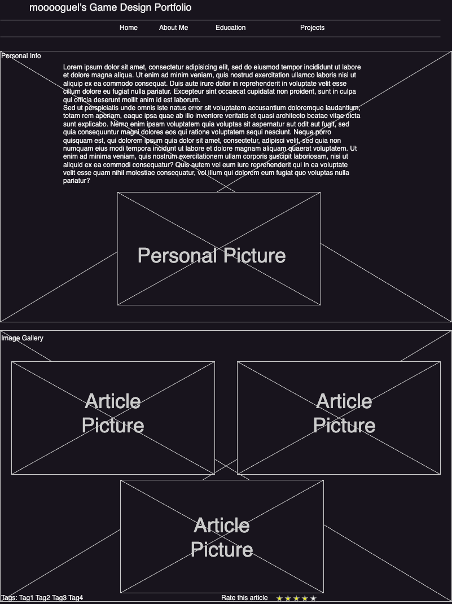
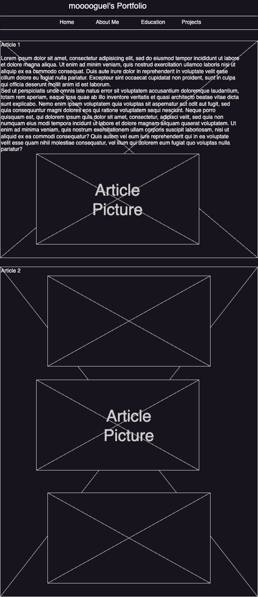

Michael's Portfolio Site Plan
- Site Name: mooooguel's Portfolio
- Link: michaelwatsonportfolio.com
- This site serves as a space to view my work and projects that relate to my studies and
pursuits in the world of Game Design.
- Scenario 1: What kind of work has Michael made?
- Scenario 2: What degrees does Michael have and pursuing?
- Color Schema: The colors are defined in the :root element at the top of
styles/project.css file. I am using --back-color2: for the main header backgrounds and the footer.
and --back_color1: for the main background. More colors will be used as the project progresses
- Typography: I will be using the Google font of Poppins for the text on my site.
- Wireframe: Basic Wireframes
-
Desktop
Mobile